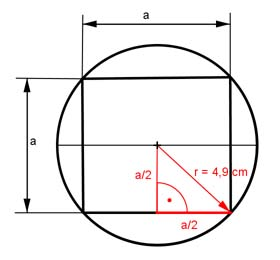

Aufgabe 208 Aus einem Kegel mit einem Grundkreisradius r = 4,9 cm und einer Höhe h von 13,2 cm soll die größte quadratische Pyramide gleicher Höhe gefertigt werden. Wie groß ist der Abfall A?

Satz von Pythagoras in dem roten Dreieck: r2 = (a/2)2 + (a/2)2 a2 a2 r2 = ---- + ---- 4 4 a2 r2 = ---- |*2 2 a2 = 2 * r2 = 2 * 4,92 cm2 = 48,02 cm2 |√ a = 6,93 cm л * r2 * h VKegel = ------------- = 3 л * 4,92 cm2 * 13,2 cm = ------------------------ = 331,7 cm3 3 a2 * h VPyramide = ---------- = 3 6,932 cm2 * 13,2 cm = --------------------- = 211,3 cm3 3 A = VKegel - VPyramide = = 331,7 cm3 - 211,3 cm3 = 120,4 cm3